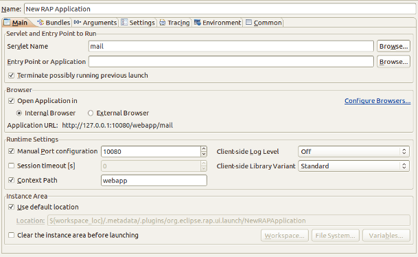

RAP 1.4 M7 - New and Noteworthy
Here's a list of the most noteworthy things that will be available in the milestone build 1.4 M7 (May 06, 2011).
This list shows all bugs that were fixed during this milestone.
Application Scope
Applications that wish to leverage this should no longer use static fields to store instances with application scope. Instead they should make use of the new
IApplicationStore.
Note: for applications using the workbench, these changes don't make a difference as multiple workbench applications cannot be run in parallel in a single virtual machine.
Response Content Compression
If you wish to use content compression, please make sure that the servlet container that you deploy the RAP application into, is configured accordingly. Learn here how to enable content compression for Jetty and Tomcat.
Shadows
- Shell
- Menu
- Widget-ToolTip
- ToolTip
- Combo-List
- CCombo-List
 Shadows can have configurable horizontal offset, vertical offset, blur-radius and color.
In Internet Explorer the blur-effect might look slightly different due to technical
limitations. Shadow also supports transparency using the
rgba notation for color.
Shadows can have configurable horizontal offset, vertical offset, blur-radius and color.
In Internet Explorer the blur-effect might look slightly different due to technical
limitations. Shadow also supports transparency using the
rgba notation for color.
CSS3-Support
Drag-behavior enabled on iPad/iPhone
- ScrollBar
- Shell
- Sash
- Scale
- Slider
- TableColumn
- TreeColumn
It is recommended to increase the size for the draggable elements to make them easier to hit with a finger. Since this can be done using only theming, its possible to target mobile and desktop clients with the same application, but different themes.
Key Bindings
Display#setData() with the new constant RWT.ACTIVE_KEYS.
The resulting key events can then be handled, just like in SWT, by adding a global key event listener to the display using
Display.addFilter().
For details, please refer to the JavaDoc of RWT.ACTIVE_KEYS.
Target Check in Templates
Improved Launcher

You can now configure the location of the Instance Area in the launcher's Main tab. The instance area is the OSGi data location, where all bundles of the running application can store their state information. This includes resources that are used by the RAP server, such as images, but also the setting store. By selecting the option Clear the instance area before launching, you can ensure that all these resources are cleared when you re-start a RAP application.
You can now specify a Context Path in the launcher.
The context path is an optional additional path segment that enables you to launch your
application with a URL similar to your real deployment environment.
As an example, when you deploy an application named myapp on tomcat, it will usually be
accessible under an URL like http://server:port/myapp/myservletname,
where myapp is the webapp, and myservletname is the servlet name you choose in the branding.
Moreover, the launcher will now display a preview of the URL that your application will be accessible at.
RWT Application Launcher
 To run an RWT application, select a class (e.g. in the editor or package explorer) that
implements
To run an RWT application, select a class (e.g. in the editor or package explorer) that
implements IEntryPoint and hit Alt+Shift+X 3 (please feel free to
file a bug
if you find a more suitable shortcut that is not yet taken by another launch configuration).
You can also launch an RWT application by selecting a project instead of a class file. You
will be prompted to select a class from those classes that define an entry point.
Besides launching RWT applications, it can also be used to run arbitrary web applications, provided that there is a deployment descriptor (
web.xml).
The above features are just the ones that are new since the last milestone build. Summaries for earlier builds:
- News for RAP 1.4 M1
- News for RAP 1.4 M2
- News for RAP 1.4 M3
- News for RAP 1.4 M4
- News for RAP 1.4 M5
- News for RAP 1.4 M6